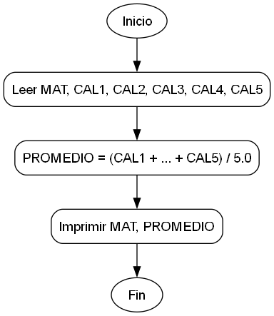

Promedio de Calificaciones de Alumno (Java)
Dada la matrícula y 5 calificaciones de un alumno obtenidas a lo largo del semestre, construya un programa en Java que lea los datos desde la consola e imprima la matrícula del alumno y el promedio de sus calificaciones.
Diagrama de flujo

Datos del Problema
- Datos de Entrada: MAT, CAL1, CAL2, CAL3, CAL4, CAL5
- Descripción de Datos (Tipos en Java):
MAT:int(representa la matrícula del alumno).CAL1, CAL2, CAL3, CAL4, CAL5:double(representan las 5 calificaciones del alumno).
- Salida Esperada:
- Imprimir la matrícula (MAT).
- Imprimir el promedio (
double) de las 5 calificaciones.
Requisitos de Implementación (Java)
- Crear una clase principal (ej.
PromedioAlumno). - Usar la clase
java.util.Scannerpara leer los datos desde la consola. - Solicitar al usuario la matrícula (
nextInt()). - Solicitar al usuario las 5 calificaciones (
nextDouble()). - Calcular el promedio. La operación debe ser de punto flotante.
- Imprimir la matrícula y el promedio en la consola usando
System.out.println().
Ejemplo de uso esperado
(Al ejecutar el programa en la consola)
Ingrese la matrícula: 12345
Ingrese calificación 1: 10.0
Ingrese calificación 2: 9.5
Ingrese calificación 3: 8.0
Ingrese calificación 4: 7.5
Ingrese calificación 5: 9.0
--- Resultados ---
Matrícula: 12345
Promedio: 8.8